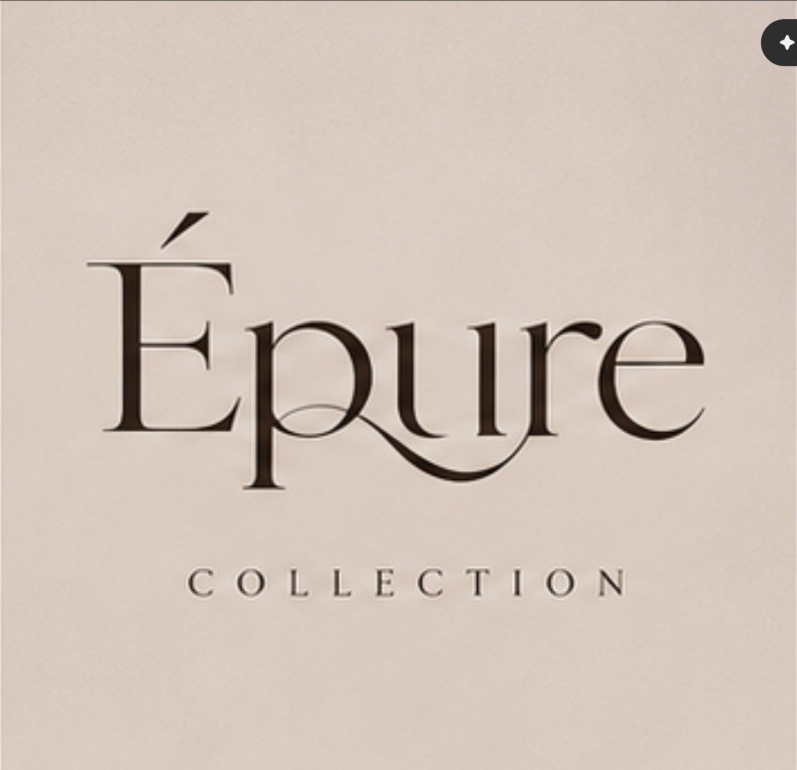
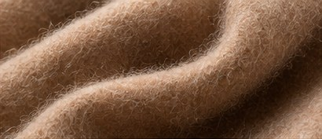

AUTOMNE / HIVER 2026 — ÉPURE COLLECTION
L’allure
parisienne.
Sans effort.
절제된 태도, 여유로운 실루엣. ÉPURE가 그리는 새로운 프렌치 시크.
EXPLORE THE COLLECTION ↗01 / 04 — ÉTUDE PARISIENNE
THE SENSORY MOVEMENT STUDY / 03 SEC
L’art du mouvement.
선과 결을 따라 천천히 움직이는 에디토리얼 필름. AI 생성 이미지로 제작한 카메라 무브먼트 시안이며 실제 모델 워킹 영상은 아닙니다.
DISCOVER THE MATERIAL ↗LA MAISON ÉPURE
“Le style est une façon de dire qui vous êtes, sans parler.”
파리의 예술적 감각, 세대를 지나도 빛나는 재단, 일상 속 자유로운 움직임. ÉPURE는 과시보다 깊이를, 유행보다 태도를 선택합니다.
ÉPURE / L’IDENTITÉUn style.
Un style.
Une signature.
선택하신 ÉPURE COLLECTION 공식 워드마크의 고유한 곡선과 페이퍼 톤을 그대로 보존했습니다. 파리의 살롱 문화에서 영감을 받은 새로운 에디토리얼 언어를 제안합니다.
DÉCOUVRIR LA MAISON ↗
01 / LA SÉLECTION
Form & Feeling


02 / LA PHILOSOPHIE
Made to
be lived in.
아름다운 옷은 한 순간의 인상이 아니라 매일의 움직임 속에서 완성됩니다. 에퓌르는 구조의 정확성과 착용의 자유가 공존하는 옷을 제안합니다.
DISCOVER THE CRAFT ↗03 / LA MATIÈRE
La beauté du geste.

CASHMERE / DOUBLE FACE
A softer
language.
가벼움과 밀도의 미묘한 균형. 원사의 결, 손끝에 닿는 기모감, 재단 후의 드레이프까지 원단을 하나의 건축처럼 바라봅니다.
EXPERIENCE THE TEXTURE ↗04 / SALON PRIVÉ
Le privilège
of time.
당신만의 속도로 옷을 경험하는 예약제 프라이빗 살롱. 체형과 취향을 이야기하고, 오직 하나의 균형을 찾아가는 시간을 제안합니다.
REQUEST AN APPOINTMENT ↗
05 / JOURNAL